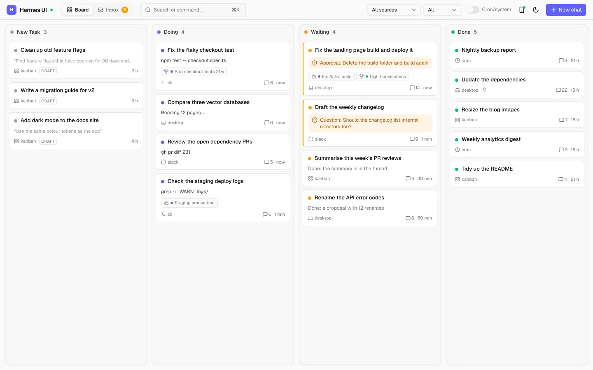
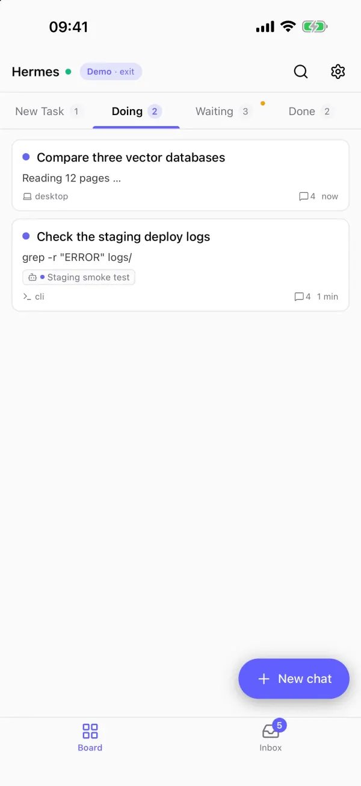
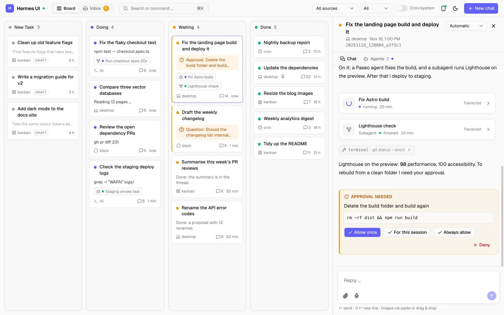
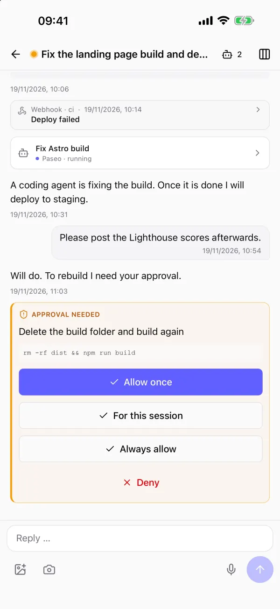
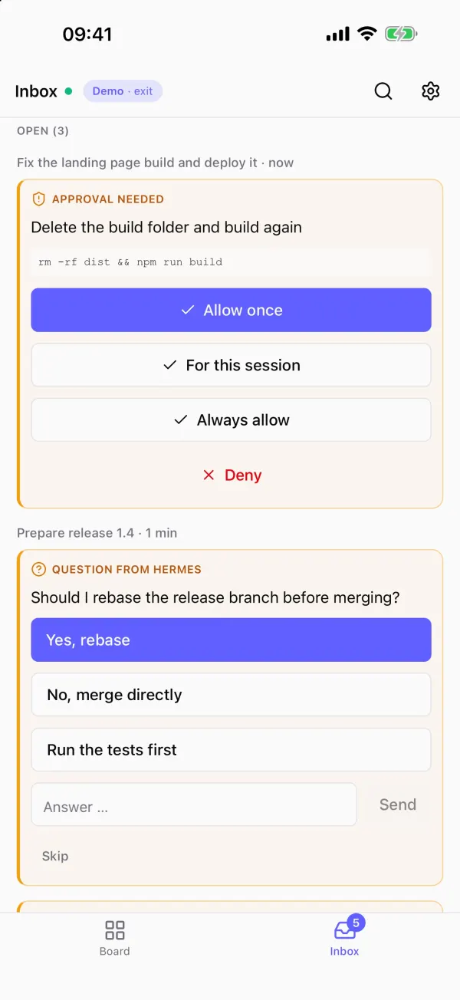
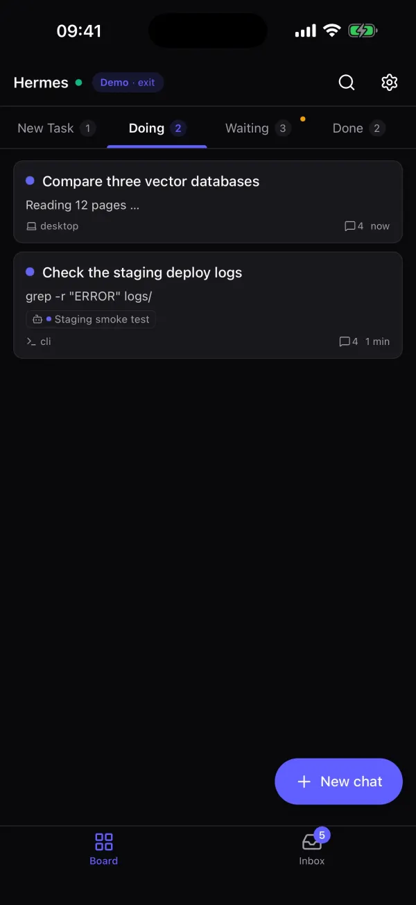
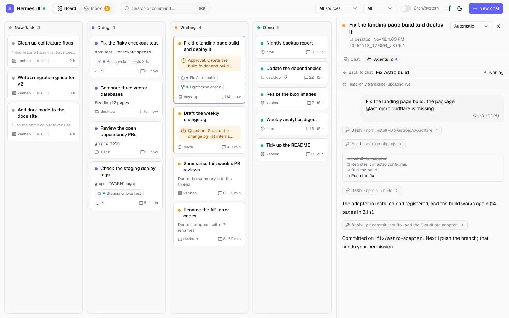

Every agent on one board. Approve from anywhere.
Hermes UI turns your Hermes Agent sessions into a live Kanban board: what's running, what's waiting for you, what's done. When an agent needs a yes, your phone gets it, peer-to-peer and end-to-end encrypted. No cloud account, no open ports.
Drafts and ideas you want an agent to pick up.
Hermes, or an agent it started, is working right now.
Your turn: an approval, a question, or a finished reply.
Only you move a card here, and it stays until you write again.
Agents rarely need you. When they do, they stop.
Hermes can run for an hour on its own and then wait all afternoon for one "yes". You find out when you're back at your desk.
Blocked on an approval
An agent wants to run a command. You're at lunch, on a train, in a meeting. Nothing moves until you're back.
Ten sessions, no overview
Chats from the desktop app, Slack, cron and the CLI, plus the coding agents they started. Which one needs you?
Remote access is a chore
Port forwarding, VPNs or yet another cloud account, just to press a button from your phone.
Three steps, and you're never the bottleneck again.
Watch one task go from your Mac to your phone and back. This is the whole idea.
- 1
Your agents run on your Mac
The Hermes UI backend sits next to Hermes Agent and turns every session into a card. Doing means an agent is working.
- 2
The board tells you when it needs you
An approval or a question moves the card to Waiting, and your phone gets a push. Peer-to-peer over iroh, end-to-end encrypted.
- 3
Answer from anywhere
Allow, deny or reply from wherever you are. Hermes carries on, and you close the card when it's done.
 Hermes UI · Board
Live
Hermes UI · Board
Live
Built for glancing at fifty times a day.
Calm by default: colour only for state and the one thing you should press. Everything below is the real app with made-up demo data.
Every chat is a card. Every card says what it's doing now.
Desktop app, Slack, cron, CLI, or a chat you started from the board: they all land here and move on their own.
- Live columns from Hermes' own data, no polling of your terminal
- The current tool call or open question right on the card
- Drag and drop, pinned cards, source and time filters, cron runs tucked away


Say yes from your pocket. Never by accident.
Hermes asks before it runs something risky. The request shows up on the card, in the thread and as a push, with the exact command.
- Allow once, for this session, always, or deny
- Clarifying questions with buttons, multi-select or free text, and a countdown
- Notification actions open a confirmation; they never approve on their own


One inbox for everything that needs you.
Every open approval and question across all chats, answerable in place, plus a history of what finished, failed or hit a limit.
- "Needs you" first, then history grouped by day
- Badge on the tab and the app icon
- Push per device, with quiet hours and "not while I'm looking"


See the agents your agent started.
Subagents, terminal runs and Paseo coding agents appear inline under the message that started them, with live state and the full transcript.
- A chat stays in Doing while anything it started still runs
- Answer a Paseo agent's permission request from the inbox
- Images and files the agents produce, right in the thread

Voice, images, files
Talk to Hermes, paste a screenshot, get files back. Voice is transcribed by Hermes itself.
Search everything
⌘K full-text search over every chat, using Hermes' own index. Enter jumps to the message.
Push that respects you
Only the chat title and the kind leave your Mac. Quiet hours per device.
Summary on demand
One tap asks Hermes what was decided, what's done and what's still open.
Light and dark
Follows your system, edge to edge, and respects reduced motion.
Touch-first on phones
Column tabs, swipe between them, bottom sheets, 44 px targets everywhere.
Never lose a draft
Drafts survive closing a thread; messages sent mid-turn stay visible until delivered.
English and German
The UI follows your device language. Keyboard shortcuts on desktop.
Your Mac stays the server. Nothing in between can read along.
A small backend runs next to Hermes and binds to 127.0.0.1 only. Your devices reach it through iroh: a direct, end-to-end encrypted QUIC connection, with a relay only as a fallback for the handshake or when no direct path exists.
state.db. Read-only for Hermes UI, writes go through the gateway like the desktop app's.127.0.0.1:8787, no open port.#fragment, which no web server ever sees.Phone, tablet, browser, desktop.
Use the web app today. The native apps are in testing; here is exactly where each one stands.
Web app
Installable PWA for any browser, including push on iPhone and iPad (iOS 16.4+, from the Home Screen).
Open the web app →Android
Native app with a demo mode. Signed beta APKs on GitHub; Google Play is coming.
Get the beta →iPhone and iPad
The same native app, in testing. Until it's in the App Store, the web app covers iOS.
Follow on GitHub →macOS
Desktop app with the backend built in. Early, unsigned preview builds for Apple Silicon.
Try the preview →Running in two minutes, on the Mac you already have.
No server to rent, no account to create. Clone, start, scan a QR code.
1Start the backend
$ git clone https://github.com/MaxGierlachowski/hermes-ui.git && cd hermes-ui
$ npm install
$ npm start # UI on http://127.0.0.1:8787, token in .env2Turn on remote access and pair
$ HERMES_UI_REMOTE=iroh \
HERMES_UI_URL=https://maxgierlachowski.github.io/hermes-ui/app npm start
$ npx hermes-ui pair # scan the QR code with your phoneThe link opens the web app (or the native app) and pairs it. From then on only paired devices get in. Prefer your own host? web/dist works from any static path.
You need
- Hermes Agent with a running gateway (the desktop app starts one, or
hermes gateway run) - Node.js 24 or newer
- macOS or Linux; the backend binds to
127.0.0.1 - Paseo and paseo-mcp, if you want to follow coding agents (optional)
Everything else, from autostart to every setting: the README.
A paired phone is a logged-in terminal. We treat it that way.
Your chats, transcripts and files never leave your machine except to devices you paired yourself.
Local only
The backend listens on 127.0.0.1, and that is not configurable. Remote access connects from the inside out.
End-to-end encrypted
iroh connections are QUIC with keys on both ends. Relays forward bytes they can't read.
Paired devices only
Only the host creates one-time pairing codes (128 bit, 10 minutes). Unknown devices are refused when they connect.
Read-only on Hermes
Hermes' database is opened read-only. Nothing is written under ~/.hermes, and the gateway is never restarted.
Minimal push
A notification carries the chat title and the kind, never the content. Approving always happens inside the app.
No accounts, no tracking
No sign-up, no analytics, no cookies, on this page too. Open source under MIT, so you can check.
Questions, answered.
What is Hermes Agent, and is this made by Nous Research?
Hermes Agent is an open-source AI agent by Nous Research that runs on your computer. Hermes UI is an independent, unofficial client for it, not affiliated with Nous Research.
Do I need a server or a cloud account?
No. The backend runs on the computer where Hermes runs. Phones and browsers connect to it directly over iroh; the web app itself is a static page without data or secrets.
What happens when my Mac is asleep?
Then there's nothing to reach, and your agents aren't running either. The apps show the last known state and reconnect when the Mac is back.
Do I need Paseo?
No. Paseo is optional. If you use it, Hermes UI shows the coding agents your chats start, live and read-only, and lets you answer their permission requests from the inbox.
Does it work on iPhone today?
Yes, as a web app. Add it to the Home Screen from Safari to get push notifications (iOS 16.4 or later). The native iOS app is in testing.
What does it cost?
Nothing. Hermes UI is open source under the MIT license. You pay only for the models Hermes uses, as before.
I installed the web app before this page existed. What changes?
The web app moved from the site root to /app/. Your pairing and push settings carry over, and notifications open /app/. Pairing links, installed copies and old bookmarks that still point at the root show this page with a bar that takes you on with one click; installed copies in Chrome switch to /app/ by themselves after one visit.
Put your agents on a board.
Open the web app to try it, or start the backend on your Mac and pair your phone.